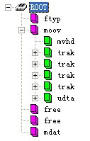

brands：品牌，与 ftyp 框中给出的文件品牌对应的 4CC 代码数组，
created：日期对象，指示影片标题中给出的文件的创建日期，
modified：日期对象，指示影片标题中给出的文件的最后修改日期，
timescale：持续时间，时间刻度，数字，对应于影片标题中给出的时间刻度，
duration：数字，以时间刻度单位提供影片（未分割部分）的持续时间，
isProgressive：是渐进的，布尔，指示文件是否可以逐步播放，
isFragmented：是碎片，布尔，指示文件是否已碎片化，
fragment_duration：碎片持续时间，数字，以时间刻度单位表示文件碎片部分的持续时间，
hasIOD：布尔，指示文件是否包含 MPEG-4 初始对象描述符
tracks：轨道，轨道信息对象数组
跟踪信息对象：
id：数字，提供轨道标识符，
created：日期对象，指示在轨道标题中给出的文件的创建日期，
modified：日期对象，指示轨道标头中给出的文件的最后修改日期，
alternate_group：备用组，轨道所属的备用组的数量、标识符，
timescale：时间刻度，数字，指示轨道时间刻度，如轨道标题中给出的，
duration：持续时间，数量，以时间刻度单位为单位提供（未分割部分）轨道的持续时间，
bitrate：比特率，数字，以每秒位数提供轨道的比特率，
nb_samples：nb 样本，编号，给出轨道样本数（即帧），
codec：编解码器，字符串，为此轨道提供 MIME 编解码器参数（例如，"avc1.42c00d"或"mp4a.40.2"），用于创建具有媒体源扩展的 SourceBuffer 对象，
language：语言，字符串，给出 3 个字母的语言代码，
track_width：轨道宽度，轨道编号、轨道宽度，如轨道标题所示，
track_height：轨道高度，轨道编号、轨道高度，如轨道标题所示，
layer：层轨，道标题中指示的数字、图层信息，
video：视频，对象，特定于视频轨道的信息
audio：音频，对象，特定于音轨的信息
目前MP4的概念被炒得很火，也很乱。最开始 MP4 指的是音频（MP3 的升级版），即 MPEG-2 AAC 标准。随后 MP4 概念被转移到视频上，对应的是 MPEG-4 标准。而现在我们流行的叫法，多半是指能播放 MPEG-4 标准编码格式视频的播放器。但是这篇文章介绍的内容跟上面这些都无关，我们要讨论的是 MP4 文件封装格式，对应的标准为 ISO/IEC 14496-12，即信息技术 视听对象编码的第 12 部分：ISO 基本媒体文件格式（Information technology Coding of audio-visual objects Part 12: ISO base media file format）。ISO/IEC 组织指定的标准一般用数字表示，ISO/IEC 14496 即 MPEG-4 标准。
MP4 视频文件封装格式是基于 QuickTime 容器格式定义的，因此参考 QuickTime 的格式定义对理解 MP4 文件格式很有帮助。MP4 文件格式是一个十分开放的容器，几乎可以用来描述所有的媒体结构，MP4 文件中的媒体描述与媒体数据是分开的，并且媒体数据的组织也很自由，不一定要按照时间顺序排列，甚至媒体数据可以直接引用其他文件。同时，MP4 也支持流媒体。MP4 目前被广泛用于封装 h.264 视频和 AAC 音频，是高清视频的代表。
现在我们就来看看MP4文件格式到底是什么样的。
MP4 文件中的所有数据都装在 box（QuickTime中为atom）中，也就是说 MP4 文件由若干个 box 组成，每个 box 有类型和长度，可以将 box 理解为一个数据对象块。box 中可以包含另一个 box，这种 box 称为 container box。一个 MP4 文件首先会有且只有一个 “ftyp” 类型的 box，作为 MP4 格式的标志并包含关于文件的一些信息；之后会有且只有一个 “moov” 类型的 box（Movie Box），它是一种container box，子 box 包含了媒体的metadata信息；MP4 文件的媒体数据包含在“mdat”类型的 box（Midia Data Box）中，该类型的 box 也是 container box，可以有多个，也可以没有（当媒体数据全部引用其他文件时），媒体数据的结构由 metadata 进行描述。
下面是一些概念：
track 表示一些 sample 的集合，对于媒体数据来说，track 表示一个视频或音频序列。
hint track 这个特殊的 track 并不包含媒体数据，而是包含了一些将其他数据 track 打包成流媒体的指示信息。
sample 对于非 hint track 来说，video sample 即为一帧视频，或一组连续视频帧，audio sample 即为一段连续的压缩音频，它们统称 sample。对于 hint track，sample 定义一个或多个流媒体包的格式。
sample table 指明 sampe 时序和物理布局的表。
chunk 一个 track 的几个 sample 组成的单元。
在本文中，我们不讨论涉及 hint 的内容，只关注包含媒体数据的本地 MP4 文件。下图为一个典型的 MP4 文件的结构树。

首先需要说明的是，box 中的字节序为网络字节序，也就是大端字节序（Big-Endian），简单的说，就是一个 32 位的 4 字节整数存储方式为高位字节在内存的低端。Box 由 header 和 body 组成，其中 header 统一指明 box 的大小和类型，body 根据类型有不同的意义和格式。
标准的 box 开头的 4 个字节（32位）为 box size，该大小包括 box header 和 box body 整个 box 的大小，这样我们就可以在文件中定位各个 box。如果 size 为 1，则表示这个 box 的大小为 large size，真正的 size 值要在 largesize 域上得到。（实际上只有 “mdat” 类型的 box 才有可能用到large size。）如果 size 为 0，表示该 box 为文件的最后一个 box，文件结尾即为该 box 结尾。（同样只存在于 “mdat” 类型的 box 中。）
size 后面紧跟的 32 位为 box type，一般是 4 个字符，如 “ftyp”、“moov” 等，这些 box type 都是已经预定义好的，分别表示固定的意义。如果是 “uuid”，表示该 box 为用户扩展类型。如果 box type 是未定义的，应该将其忽略。
该 box 有且只有 1 个，并且只能被包含在文件层，而不能被其他 box 包含。该 box 应该被放在文件的最开始，指示该 MP4 文件应用的相关信息。
“ftyp” body 依次包括 1 个 32 位的 major brand（4个字符），1 个 32 位的 minor version（整数）和 1 个以 32 位（4 个字符）为单位元素的数组 compatible brands。这些都是用来指示文件应用级别的信息。该 box 的字节实例如下：
该 box 包含了文件媒体的 metadata 信息，“moov” 是一个container box，具体内容信息由子 box 诠释。同 File Type Box 一样，该 box 有且只有一个，且只被包含在文件层。一般情况下， “moov” 会紧随 “ftyp” 出现。
一般情况下（限于篇幅，本文只讲解常见的 MP4 文件结构），“moov” 中会包含 1 个 “mvhd” 和若干个 “trak”。其中 “mvhd” 为 header box，一般作为 “moov” 的第一个子 box 出现（对于其他 container box 来说，header box 都应作为首个子 box 出现）。“trak” 包含了一个 track 的相关信息，是一个 container box。下图为部分 “moov” 的字节实例，其中红色部分为 box header，绿色为 “mvhd”，黄色为一部分 “trak”。
“mvhd” 结构如下表。
["字段","字节数","意义"],
["box size","4","box 大小"],
["box type","4","box 类型"],
["version","1","box 版本，0 或 1，一般为 0。（以下字节数均按 version = 0）"],
["flags","3",""],
["creation time","4","创建时间（相对于 UTC 时间 1904-01-01 零点的秒数）"],
["modification time","4","修改时间"],
["time scale","4","文件媒体在 1 秒时间内的刻度值，可以理解为 1 秒长度的时间单元数"],
["duration","4","该 track 的时间长度，用 duration 和 time scale 值可以计算 track 时长，比如 audio track 的 time scale = 8000, duration = 560128，时长为 70.016，video track 的 time scale = 600, duration = 42000，时长为 70"],
["rate","4","推荐播放速率，高 16 位和低 16 位分别为小数点整数部分和小数部分，即[16.16] 格式，该值为 1.0（0x00010000）表示正常前向播放"],
["volume","2","与 rate 类似，[8.8] 格式，1.0（0x0100）表示最大音量"],
["reserved","10","保留位"],
["matrix","36","视频变换矩阵"],
["pre-defined","24",""],
["next track id","4","下一个 track 使用的 id 号"]
“mvhd”的字节实例如下图，各字段已经用颜色区分开：
“trak” 也是一个 container box，其子 box 包含了该 track 的媒体数据引用和描述（hint track 除外）。一个 MP4 文件中的媒体可以包含多个 track，且至少有一个 track，这些 track 之间彼此独立，有自己的时间和空间信息。“trak” 必须包含一个 “tkhd” 和一个 “mdia”，此外还有很多可选的 box（略）。其中 “tkhd” 为track header box，“mdia” 为 media box，该 box 是一个包含一些 track 媒体数据信息 box 的 container box。
“trak” 的部分字节实例如下图，其中黄色为 “trak” box 的头，绿色为 “tkhd”，蓝色为 “edts”（一个可选 box），红色为一部分 “mdia”。
“tkhd” 结构如下表。
["字段","字节数","意义"],
["box size","4","box 大小"],
["box type","4","box 类型"],
["version","1","box 版本，0 或 1，一般为 0。（以下字节数均按 version = 0）"],
["flags","3","按位或操作结果值，预定义如下：\n0x000001 track_enabled，否则该 track 不被播放；\n0x000002 track_in_movie，表示该 track 在播放中被引用；\n0x000004 track_in_preview，表示该 track 在预览时被引用。\n一般该值为 7，如果一个媒体所有 track 均未设置 track_in_movie和track_in_preview，将被理解为所有 track 均设置了这两项；对于 hint track，该值为 0"],
["creation time","4","创建时间（相对于 UTC 时间 1904-01-01 零点的秒数）"],
["modification time","4","修改时间"],
["track id","4","id 号，不能重复且不能为 0"],
["reserved","4","保留位"],
["duration","4","track 的时间长度"],
["reserved","8","保留位"],
["layer","2","视频层，默认为 0，值小的在上层"],
["alternate group","2","track 分组信息，默认为 0 表示该 track 未与其他 track 有群组关系"],
["volume","2","[8.8] 格式，如果为音频 track，1.0（0x0100）表示最大音量；否则为 0"],
["reserved","2","保留位"],
["matrix","36","视频变换矩阵"],
["width","4","宽"],
["height","4","高，均为 [16.16] 格式值，与 sample 描述中的实际画面大小比值，用于播放时的展示宽高"]
“tkhd” 的字节实例如下图，各字段已经用颜色区分开：
“mdia” 也是个 container box，其子 box 的结构和种类还是比较复杂的。先来看一个 “mdia” 的实例结构树图。
总体来说，“mdia” 定义了 track 媒体类型以及 sample 数据，描述 sample 信息。一般 “mdia” 包含一个“mdhd”，一个 “hdlr” 和一个 “minf”，其中“mdhd”为media header box，“hdlr” 为 handler reference box，“minf” 为 media information box。下面依次看一下这几个 box 的结构。
“mdhd” 结构如下表。
["字段","字节数","意义"],
["box size","4","box 大小"],
["box type","4","box 类型"],
["version","1","box 版本，0 或 1，一般为 0。（以下字节数均按 version = 0）"],
["flags","3",""],
["creation time","4","创建时间（相对于 UTC 时间 1904-01-01 零点的秒数）"],
["modification time","4","修改时间"],
["time scale","4","同前表"],
["duration","4","track的时间长度"],
["language","2","媒体语言码。最高位为 0，后面 15 位为 3 个字符（见 ISO 639-2/T 标准中定义）"],
["pre-defined","2",""]
“mdhd” 的字节实例如下图，各字段已经用颜色区分开：
“hdlr” 解释了媒体的播放过程信息，该 box 也可以被包含在 meta box（meta）中。“hdlr” 结构如下表。
["字段","字节数","意义"],
["box size","4","box 大小"],
["box type","4","box 类型"],
["version","1","box 版本，0 或 1，一般为 0。（以下字节数均按 version = 0）"],
["flags","3",""],
["pre-defined","4",""],
["handler type","4","在 media box 中，该值为 4 个字符：\n“vide”— video track\n“soun”— audio track\n“hint”— hint track"],
["reserved","12",""],
["name","不定","track type name，以‘\\0’结尾的字符串"]
“hdlr” 的字节实例如下图，各字段已经用颜色区分开：
“minf” 存储了解释 track 媒体数据的 handler-specific 信息，media handler 用这些信息将媒体时间映射到媒体数据并进行处理。“minf” 中的信息格式和内容与媒体类型以及解释媒体数据的 media handler 密切相关，其他 media handler 不知道如何解释这些信息。“minf” 是一个 container box，其实际内容由子 box 说明。
一般情况下，“minf” 包含一个 header box，一个 “dinf” 和一个 “stbl”，其中，header box 根据 track type（即media handler type）分为 “vmhd”、“smhd”、“hmhd” 和 “nmhd”，“dinf” 为 data information box，“stbl” 为 sample table box。下面分别介绍。
下图为 “minf” 部分字节实例，其中红色为 box header，蓝色为 “smhd”，绿色为 “dinf”，黄色为一部分 “stbl”。
Video Media Header Box（vmhd）
["字段","字节数","意义"],
["box size","4","box 大小"],
["box type","4","box 类型"],
["version","1","box 版本，0 或 1，一般为 0。（以下字节数均按 version = 0）"],
["flags","3",""],
["graphics mode","4","视频合成模式，为 0 时拷贝原始图像，否则与 opcolor 进行合成"],
["opcolor","2×3","｛red，green，blue｝"]
Sound Media Header Box（smhd）
["字段","字节数","意义"],
["box size","4","box 大小"],
["box type","4","box 类型"],
["version","1","box 版本，0 或 1，一般为 0。（以下字节数均按 version = 0）"],
["flags","3",""],
["balance","2","立体声平衡，[8.8] 格式值，一般为 0，-1.0 表示全部左声道，1.0 表示全部右声道"],
["reserved","2",""]
Hint Media Header Box（hmhd）
略
Null Media Header Box（nmhd）
非视音频媒体使用该box，略。
“dinf” 解释如何定位媒体信息，是一个 container box。“dinf” 一般包含一个 “dref”，即 data reference box；“dref” 下会包含若干个 “url” 或 “urn”，这些 box 组成一个表，用来定位 track 数据。简单的说，track 可以被分成若干段，每一段都可以根据 “url” 或 “urn” 指向的地址来获取数据，sample 描述中会用这些片段的序号将这些片段组成一个完整的 track。一般情况下，当数据被完全包含在文件中时，“url” 或 “urn” 中的定位字符串是空的。
“dref” 的字节结构如下表。
["字段","字节数","意义"],
["box size","4","box 大小"],
["box type","4","box 类型"],
["version","1","box 版本，0 或 1，一般为 0。（以下字节数均按 version = 0）"],
["flags","3",""],
["entry count","4","“url” 或 “urn” 表的元素个数"],
["“url” 或 “urn” 列表","不定",""]
“url” 或 “urn” 都是 box，“url” 的内容为字符串（location string），“urn” 的内容为一对字符串（name string and location string）。当 “url” 或 “urn” 的 box flag 为 1 时，字符串均为空。
下面是一个 “dinf” 的字节实例图。其中黄色为 “dinf” 的 box header，由红色部分我们知道包含的 “url” 或 “urn” 个数为 1，红色后面为 “url” box 的内容。紫色为 “url” 的 box header（根据 box type 我们知道是个 “url”），绿色为 box flag，值为 1，说明 “url” 中的字符串为空，表示 track 数据已包含在文件中。
“stbl” 几乎是普通的 MP4 文件中最复杂的一个 box 了，首先需要回忆一下 sample 的概念。sample 是媒体数据存储的单位，存储在 media 的 chunk 中，chunk 和 sample 的长度均可互不相同，如下图所示。
“stbl” 包含了关于 track 中 sample 所有时间和位置的信息，以及 sample 的编解码等信息。利用这个表，可以解释 sample 的时序、类型、大小以及在各自存储容器中的位置。“stbl” 是一个 container box，其子 box 包括：sample description box（stsd）、time to sample box（stts）、sample size box（stsz 或 stz2）、sample to chunk box（stsc）、chunk offset box（stco 或 co64）、composition time to sample box（ctts）、sync sample box（stss）等。
“stsd” 必不可少，且至少包含一个条目，该 box 包含了 data reference box 进行 sample 数据检索的信息。没有 “stsd” 就无法计算 media sample 的存储位置。“stsd” 包含了编码的信息，其存储的信息随媒体类型不同而不同。
Sample Description Box（stsd）
box header 和 version 字段后会有一个 entry count 字段，根据 entry 的个数，每个 entry 会有 type 信息，如 “vide”、“sund” 等，根据 type 不同 sample description 会提供不同的信息，例如对于 video track，会有 “VisualSampleEntry” 类型信息，对于 audio track 会有 “AudioSampleEntry” 类型信息。
视频的编码类型、宽高、长度，音频的声道、采样等信息都会出现在这个 box 中。
Time To Sample Box（stts）
“stts” 存储了 sample 的 duration，描述了 sample 时序的映射方法，我们通过它可以找到任何时间的 sample。“stts” 可以包含一个压缩的表来映射时间和 sample 序号，用其他的表来提供每个 sample 的长度和指针。表中每个条目提供了在同一个时间偏移量里面连续的 sample 序号，以及 samples 的偏移量。递增这些偏移量，就可以建立一个完整的 time to sample 表。
Sample Size Box（stsz）
“stsz” 定义了每个 sample 的大小，包含了媒体中全部 sample 的数目和一张给出每个 sample 大小的表。这个 box 相对来说体积是比较大的。
Sample To Chunk Box（stsc）
用 chunk 组织 sample 可以方便优化数据获取，一个 thunk 包含一个或多个 sample。“stsc” 中用一个表描述了 sample 与 chunk 的映射关系，查看这张表就可以找到包含指定 sample 的 thunk ，从而找到这个 sample。
Sync Sample Box（stss）
“stss” 确定 media 中的关键帧。对于压缩媒体数据，关键帧是一系列压缩序列的开始帧，其解压缩时不依赖以前的帧，而后续帧的解压缩将依赖于这个关键帧。“stss” 可以非常紧凑的标记媒体内的随机存取点，它包含一个 sample 序号表，表内的每一项严格按照 sample 的序号排列，说明了媒体中的哪一个 sample 是关键帧。如果此表不存在，说明每一个 sample 都是一个关键帧，是一个随机存取点。
Chunk Offset Box（stco）
“stco” 定义了每个 thunk 在媒体流中的位置。位置有两种可能，32 位的和 64 位的，后者对非常大的电影很有用。在一个表中只会有一种可能，这个位置是在整个文件中的，而不是在任何 box 中的，这样做就可以直接在文件中找到媒体数据，而不用解释 box。需要注意的是一旦前面的 box 有了任何改变，这张表都要重新建立，因为位置信息已经改变了。
“free” 中的内容是无关紧要的，可以被忽略。该 box 被删除后，不会对播放产生任何影响。
该 box 包含于文件层，可以有多个，也可以没有（当媒体数据全部为外部文件引用时），用来存储媒体数据。数据直接跟在 box type 字段后面，具体数据结构的意义需要参考 metadata（主要在 sample table 中描述）。
普通 MP4 文件的结构就讲完了，可能会比较乱，下面这张图是常见的 box 的树结构图，可以用来大致了解 MP4 文件的构造。
这篇文章主要面向一些对MP4文件结构没有太多了解的初学者，算是篇比较初级的文章，本人也是参考了一些资料写出来的，对于MP4文件中涉及的一些概念没有太深入的了解，因此其中应该是有一些错误理解，希望大家抱着批判的眼光读这篇文章。如果有错误的地方，还请大家不吝赐教。
该文主要参考了标准和网友 wqyuwss 的 blog 系列文章：MP4 文件格式
原文链接: http://blog.sina.com.cn/s/blog_48f93b530100jz4x.html
参考链接：